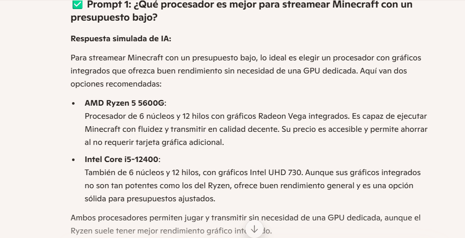
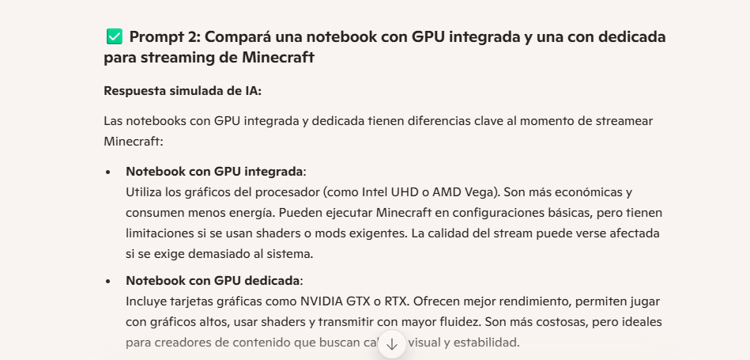

Ficha tecnica
Producto:
- NOTEBOOK GAMER HP 15.6" VICTUS RYZEN 5 7535HS 8GB 512GB RX6550M FHD W11 R5
Sistema operativo
- Windows 11 Home Single Language
Procesador
- AMD Ryzen™ 5 8645HS (aumento máximo del reloj hasta 5,0 GHz, 16 MB L3 de caché, 6 núcleos, 12 subprocesos)
Familia del procesador
- AMD Ryzen™ 5
Chipset
- SoC integrado AMD
Memoria
- Memoria, estándar: RAM DDR5-5600 MT/s de 8 GB (1 x 8 GB)
Almacenamiento
- Unidad de estado sólido PCIe® Gen4 NVMe™ M.2 de 512 GB
Pantalla y gráficos
- Monitor: Pantalla FHD, IPS, antirreflejante, de 39,6 cm (15.6") en diagonal, 300 nits y 62.5 % de sRGB (1920 x 1080);
- Gráficos: GPU NVIDIA® GeForce RTX™ 2050 para laptop (GDDR6 de 4 GB dedicada)
Características de expansión
- Puertos: 1 USB Type-C® con velocidad de señalización de 5 Gb/s (DisplayPort™ 1.4, HP Sleep and Charge); 1 USB Tipo-A con velocidad de señalización de 5 Gb/s (HP Sleep and Charge); 1 USB Tipo-A con velocidad de señalización de 5 Gb/s; 1 HDMI 2.1; 1 RJ-45; 1 pin inteligente de CA; 1 combinación de auriculares/micrófono
- Ranuras de expansión: 1 lector de tarjetas SD multiformato
Dispositivos de medios
- Funciones de audio: DTS:X® Ultra; Bocinas duales; HP Audio Boost
- Dispositivos de entrada: Dispositivo apuntador: HP Imagepad compatible con la función multitáctil; Teclado: Teclado de tamaño completo retroiluminado con teclado numérico
Comunicaciones
- Interfaz de red: LAN 10/100/1000 GbE integrada
- Inalámbrico: Tarjeta inalámbrica MediaTek Wi-Fi 6E MT7922 (2x2) y Bluetooth® 5.3
Requisitos de Fuente de alimentación y operacionales
- Tipo de fuente de alimentación: Adaptador de alimentación de CA de 135W
- Tipo de batería: Batería de polímero de iones de litio, de 3celdas y 52,5Wh
- Peso de la batería: 210 g
- Eficiencia de energía: Registro EPEAT ® Gold
Dimensiones y peso
- Dimensiones mínimas (anch. x prof. x alt.): 35,79 x 25,5 x 2,35 cm
- Dimensiones del embalaje (An x F x Al): 6,9x52x30,5 cm
- Peso: 2,29 kg
- Peso del embalaje: 3,35 kg
Diseño
- Color de producto: Plata mica, logotipo cromado oscuro
Gestión de Seguridad
- Gestión de seguridad: Compatibilidad con Trusted Platform Module (TPM de firmware)
- País de origen: China (ABM)
Software
- Aplicaciones HP: HP Documentation; HP Games by WildTangent; HP Setup Integrated OOBE; HP SSRM; HP Support Assistant; HP System Event Utility; OMEN Command Center; HP Connection Optimizer; HP PC Hardware Diagnostics Windows; HP Privacy Settings; HP BIOS Protection; OMEN Gaming Hub
- Software incluido: Prueba gratuita de 1 mes de Adobe; Prueba de 30 días de McAfee Online Protection
- Software - productividad y finanzas: 1 mes de prueba para los nuevos clientes de Microsoft Office 365
Garantía y Servicios
- Garantía: 1 año de garantía limitada de hardware con soporte técnico telefónico gratuito. 90 días de soporte técnico limitado para software (a partir de la fecha de compra).
A esta notebook se le agrega:
- Memoria Ram Sodimm Hikvision 8GB 5600 Mhz DDR5 5600MHZ.
Para aumentar la memoria ram ya que esta notebook cuenta con dos slots y aprovechar la utilización del Dual chanel.
Precio y fuentes.
Notebook:
- Precio: $1.151.319,81 = 853 USD (se toma como refencia un dolar con valor de $1.350 ARS)
- Fuente: Tienda oficial en argentina H4ard.
- Link: https://fullh4rd.com.ar/prod/28605/notebook-gamer-hp-156-victus-ryzen-5-7535hs-8gb-512gb-rx6550m-fhd-w11-r5
Memoria RAM:
- Precio: $37.800,00 ARS = $28 USD
- Fuente: Tienda oficial en argentina Maximus.
- Link: https://www.maximus.com.ar/Producto/memoria-ram-sodimm-hikvision-8gb-5600-mhz-ddr5/ITEM=14103/maximus.aspx?PN=324101300
Periféricos y accesorios.
- Mouse Fury Scrapper RGB
- Precio: $5900 ARS = $4,40 USD
- Fuente: Tienda oficial en argentina Maximus.
- Link: https://www.maximus.com.ar/Producto/mouse-fury-scrapper-rgb/ITEM=11265/maximus.aspx?PN=NFU-1699
Auricular c/microfono Inalambrico Redragon Ire Pro Black H848
- Caracteristicas: Auricular gamer inalámbrico Redragon IRE PRO H848, con micrófono, sonido envolvente 7.1, luces RGB, batería de larga duración, compatible con PC, PS4, PS5 y Nintendo Switch.
- Precio $64500 = $47,80 USD
- link:https://www.maximus.com.ar/Producto/auricular-cmic-inalambrico-redragon-ire-pro-black-h848/ITEM=13484/maximus.aspx?PN=6950376715357
Webcam Logitech C270 HD 720P
- Caracteristicas: Resolución HD 720p, Corrección automática de luz, Micrófono integrado con reducción de ruido, Compatibilidad con Windows, Mac y Chrome OS, Fácil configuración y uso
- Precio: $33100 = $24,52 USD
- Link: https://www.maximus.com.ar/Producto/webcam-logitech-c270-hd-720p/ITEM=6134/maximus.aspx?PN=960-000694
Licencia de Microsoft Windows 11 Home (PC) - Microsoft Key - GLOBAL:
- Caracteristicas: Activación instantánea, Licencia original y legal, Compatible con Windows 11 Home, Uso en 1 PC, Soporte técnico de Microsoft
- Precio: $34.439,07 = $25,52 USD
- Link: https://www.g2a.com/es/microsoft-windows-11-home-pc-microsoft-key-global-i10000271161001?msockid=1899ca509140699a1d1bdc60907c6830
Resumen de precios
Total y costos de envio.
- Notebook: $1.151.319,81 = 853 USD
- Memoria Ram Sodimm Hikvision 8GB 5600 Mhz DDR5 5600MHZ: $37.800,00 ARS = $28 USD
- Mouse Fury Scrapper RGB: $5900 ARS = $4,40 USD
- Auricular c/microfono Inalambrico Redragon Ire Pro Black H848: $64500 = $47,80 USD
- Webcam Logitech C270 HD 720P: $33100 = $24,52 USD
- Licencia de Microsoft Windows 11 Home (PC) - Microsoft Key - GLOBAL: $34.439,07 = $25,52 USD
Costos de envio:
- RAM, periféricos y accesorios: costo de $6947.82 = $ 5,15 USD. Envió de OCA a Sucursal.
- Instalación de la Memoria RAM: unos 10 USD adicionales aproximadamente (opcional)
- Total: 998,39 USD
PRESUPUESTO DESCARTADO
ficha tecnica/componentes.
- CPU: AMD Ryzen 5 5600X – USD 160
- Link:https://www.venex.com.ar/procesadores/amd/amd-ryzen-5-5600x.html
- Motherboard: ASUS Prime B550M-A – USD 110
- Link:https://www.maximus.com.ar/Producto/Mother-ASUS-PRIME-B550M-A-WIFI-II/ITEM=11494/maximus.aspx
- RAM: 16GB DDR4 3200MHz (2x8GB) – USD 70
- Link:https://www.digitalstore.com.ar/memoria-ram-kingston-fury-beast-16gb-ddr4-3200mhz.html
- SSD: 480GB SSD SATA – USD 40
- Link:https://www.digitalstore.com.ar/disco-solido-ssd-kingston-a400-480gb-sata.html
- GPU: GTX 1660 Super 6GB – USD 230
- Link:https://www.venex.com.ar/placas-de-video/nvidia/placa-de-video-nvidia-geforce-gtx-1660-super.html
- Fuente: 550W 80 Plus Bronze – USD 50
- Link:https://www.maximus.com.ar/Producto/Fuente-550W-MSI-MAG-A550BN-80-PLUS-Bronze/ITEM=11519/maximus.aspx
- Gabinete: Kolink Void ATX – USD 60
- Link:https://teamtecno.com.ar/producto/gabinete-gamer-kolink-void-rgb-atx/
- Estabilizador: Forza FX-1500LCD 1500VA – USD 60
- Link:https://www.forzaups.com/es/productos/interna/FX-1500LCD-esp/
- Windows 11 Home: Licencia OEM – USD 40
- Link:https://bluetech.com.ar/productos/licencia-microsoft-windows-11-home-key-oem/
Monitor,Periféricos y accesorios.
- Monitor: LG 24” Full HD 75Hz IPS – USD 110
- Link:https://www.xt-pc.com.ar/prod/12355/monitor-24-lg-led-24mk430h-b-ips-75hz-5ms
- Teclado: Redragon Kumara K552 Mecánico – USD 40
- Link:https://www.venex.com.ar/perifericos/teclados/teclado-redragon-kumara-2-rainbow.html
- Mouse: Logitech G203 Lightsync RGB – USD 30
- Link:https://logg.com.ar/ProductDetail/Logi-G203-LIGHTSYNC-White
- Auriculares: Redragon Ares H120 – USD 25
- Link:https://www.venex.com.ar/auriculares/gamer/auricular-redragon-h120-ares-rgb-c-microfono-s-adaptador.html
- Micrófono: Razer Seiren Mini USB – USD 50
- Linkhttps://www.razer.com/latam-es/streaming-microphones/razer-seiren-mini:
- Webcam: Logitech C920 HD 1080p – USD 60
- Link:https://www.maximus.com.ar/Producto/Webcam-Logitech-C920-FULL-HD-1080P/ITEM=11434/maximus.aspx?PN=960-001360
PRESUPUESTO TOTAL ESTIMADO: 995 USD
- Considerando estos 2 preupuestos mi eleccion es la primera ya que una Notebook permite una mejor comodidad para la transmision en vivo en cualquier lugar donde se tenga una buena conectividad.
Benchmark HP Victus Ryzen 5 7535HS RX6550M
Benchmark de Rendimiento - HP Victus 15.6"
Procesador: AMD Ryzen 5 7535HS
GPU: AMD Radeon RX 6550M
RAM: 16 GB DDR5
SSD: 512 GB
Resolución: Full HD (1920x1080)
FPS aproximados en juegos y streaming
| Juego / Tareas |
FPS (1080p) |
Configuración |
| Minecraft (sin mods) |
100–120 |
Alta |
| Minecraft (con shaders) |
60–75 |
Alta |
| Fortnite |
70–90 |
Media-Alta |
| Valorant |
120+ |
Alta |
| GTA V |
60–70 |
Alta |
| Streaming con OBS + Minecraft |
60 estables |
1080p |
Interacciones con la IA.
Captura 1: Procesador para streamear Minecraft

Conclusión: Estoy de acuerdo con la sugerencia del Ryzen 5 5600G. Tiene gráficos Vega integrados que permiten jugar y transmitir sin necesidad de una GPU dedicada, lo que reduce costos. El Intel i5-12400 también es una opción válida, aunque sus gráficos UHD son menos potentes. Para alguien que recién empieza a streamear Minecraft sin mods exigentes, ambas opciones son razonables.
Captura 2: Comparación de notebooks con GPU integrada vs dedicada

Conclusión: La comparación es acertada. Las notebooks con GPU dedicada ofrecen mejor rendimiento gráfico, especialmente si se usan shaders o mods en Minecraft. Sin embargo, para quienes tienen un presupuesto limitado, una GPU integrada puede ser suficiente si se ajustan los gráficos. La elección depende del tipo de contenido que se quiera transmitir y del nivel de exigencia visual.
Actividad 2: Comparación de CPUs para notebook gamer
Tabla comparativa.
Comparación: Ryzen 5 7535HS vs Intel Core i5-13420H
| Característica |
Ryzen 5 7535HS |
Intel Core i5-13420H |
| Arquitectura | Zen 3+ (Rembrandt-R) | Raptor Lake-H |
| Litografía | 6 nm | 10 nm |
| Núcleos / Hilos | 6 / 12 | 8 / 12 (4P + 4E) |
| Frecuencia base | 3.3 GHz | 2.1 GHz |
| Frecuencia turbo | 4.55 GHz | 4.6 GHz |
| Caché L3 | 16 MB | 12 MB |
| TDP | 35 W | 45 W |
| Gráficos integrados | Radeon 660M | Intel UHD Graphics |
| Socket | FP7 (soldado) | BGA 1744 (soldado) |
| Overclocking | No | No |
| Memoria soportada | DDR5 / LPDDR5 | DDR4 / DDR5 |
| Fecha de lanzamiento | Enero 2023 | Enero 2023 |
Conclusión
El Ryzen 5 7535HS es mejor por sus gráficos Radeon 660M, buenos para gaming y ligero sin GPU dedicada.
Además, su menor TDP lo hace más eficiente en portátiles.
El Intel Core i5-13420H tiene más núcleos físicos, lo que lo favorece en tareas de productividad intensiva.
Ambos son buenas opciones para notebooks gamer.
Actividad 3: Explicación técnica + traducción al lenguaje común
¿Qué es el bitrate en streaming?
Explicación técnica (IA):
El bitrate en streaming es la cantidad de datos que se transmiten por segundo durante una transmisión de video o audio.
Se mide en kilobits por segundo (Kbps) o megabits por segundo (Mbps).
Un bitrate más alto generalmente significa mejor calidad de imagen y sonido, pero también requiere una conexión a Internet más rápida y estable para evitar interrupciones o cortes en la transmisión.
Traducción en lenguaje común:
El bitrate es como la cantidad de “información” que se manda por segundo cuando hacés un vivo/directo.
Si mandás mucha, se ve y se escucha mejor, pero necesitás buen Internet. Si mandás poca, se ve más feo pero funciona con conexiones lentas.
¿Qué es la latencia?
Explicación técnica (IA):
La latencia es el tiempo que tarda un paquete de datos en viajar desde el origen hasta el destino en una red.
Se mide en milisegundos (ms). Una latencia baja significa que la comunicación es rápida y fluida, mientras que una latencia alta puede causar retrasos, especialmente en juegos en línea, videollamadas o transmisiones en vivo.
Traducción en lenguaje común:
La latencia es el “delay” o retraso que hay entre que hacés algo y se ve en la pantalla.
Por ejemplo, cuando jugás online y apretás una tecla, si hay mucha latencia, el personaje tarda en reaccionar. Mientras menos latencia, más rápido y fluido todo.
¿Qué función cumple la GPU en una PC gamer?
Explicación técnica (IA):
La GPU (Unidad de Procesamiento Gráfico) es el componente encargado de procesar y renderizar imágenes, gráficos y videos en una computadora.
En una PC gamer, la GPU permite ejecutar videojuegos con alta calidad visual, efectos especiales, y fluidez. También ayuda en tareas como edición de video, diseño 3D y aceleración de procesos gráficos.
Traducción en lenguaje común:
La GPU es la parte de la compuntadora que se encarga de que los juegos se vean bien o en mejor resolucion.
Hace que los gráficos tengan buena calidad, que los movimientos sean fluidos y que no se trabe. Sin una buena GPU, los juegos se ven feos o van muy lentos.
Imagen generada por IA.

Prompt que utilice:
"Una persona haciendo streaming de videojuegos desde una notebook, jugando Minecraft, con micrófono y cámara, en una habitación iluminada con luces LED."
Mensaje transmitido:La imagen representa el entorno típico de un streamer joven que transmite partidas de Minecraft desde una notebook en su casa. S